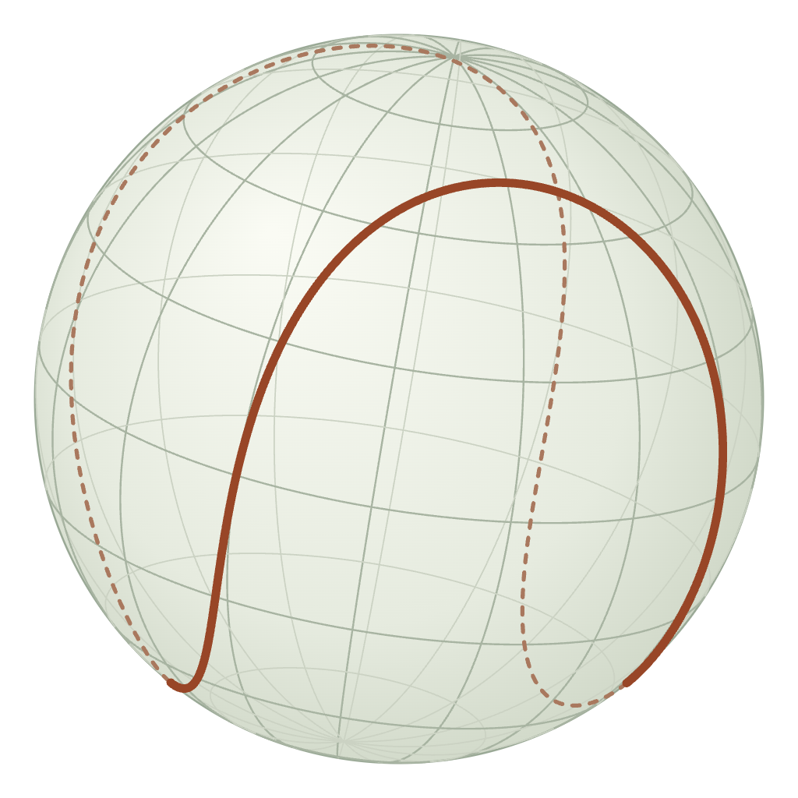

University of Vienna · Faculty of Mathematics
Martin Ehler
Associate Professor of Mathematics
I work in computational harmonic analysis, studying how to sample, approximate and reconstruct signals, images and high-dimensional data. How faithfully do the results we compute in finite precision reflect the continuous models we start from?
- Numerical harmonic analysis
- Mathematical foundations of data science
- Approximation theory
In Vienna, I’m part of the Applied Harmonic Analysis Cluster. I have served as Vice-Dean for Teaching at the Faculty of Mathematics since 2024.
Office hours
Tuesdays, 16:30–18:00
Room 10.128

The copper line is solid on the near side of the sphere and dashed on the far side.Loading the 3D model…
At a2 ≈ 0.7778, arc-length averages along the curve equal spherical averages for every polynomial of degree at most two.
At a3 ≈ 0.7660, arc-length averages along the curve equal spherical averages for every polynomial of degree at most three.
Six lines join opposite vertices of a regular icosahedron. Pair each line with its perpendicular plane through the center. Together they form a 3-design with the fewest possible subspaces.
Selected recent publications
View allPreprints
- 2026 Optimal asymptotic bounds for design curves on manifolds
- 2026 Optimal bounds for design curves on the torus
-
2026 Asymptotically optimal t-design curves on G₂,₄ and SO(3)
- 2025 Aliasing in convnets: A frame-theoretic perspective
2026 publications
- Constraints for stable sampling on the sphere
- Hybrid spherical designs
- Prompt-driven biases in generative pre-trained transformer-generated data: a statistical examination of Zipf and power-law patterns
- From point sets to curves: t-designs and Marcinkiewicz–Zygmund inequalities on the sphere
- Quantitative estimates: How well does the discrete Fourier transform approximate the Fourier transform on ℝ?
Oskar-Morgenstern-Platz 1
1090 Vienna, Austria